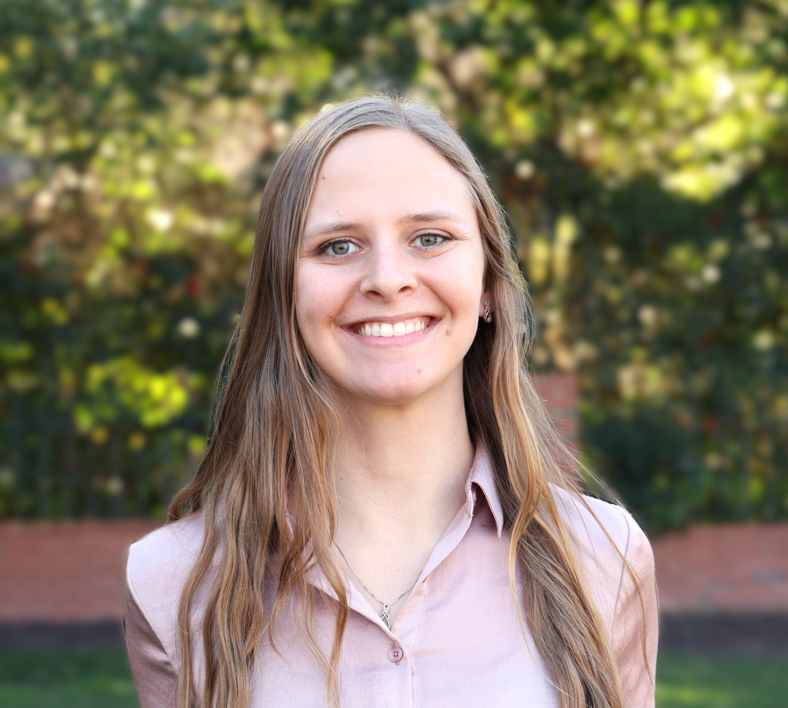

Ph.D. Candidate in Statistics & Operations Research
University of North Carolina at Chapel Hill
Email: smithmor@email.unc.edu
I am Morgan Wood, a PhD candidate in Statistics and Operations Research at the University of North Carolina at Chapel Hill. I am passionate about advancing the field of Operations Management, with research focused on data-driven decision making. Much of my current and past research focuses on tracking and forecasting customer flows, namely passenger flows through airports. I am also interested in modeling the incentives of information sharing within the collaborations of airports and airlines.
I hold MA and BS degrees in Mathematics from East Carolina University and a MS degree in Statistcs and Data Analytics from the University of North Carolina at Chapel Hill. I have been the instructor and/or teaching assistant for numerous undergraduate and Ph.D. courses on data analysis, stochastic modeling, and discrete mathematics.
I have had the great pleasure to be mentored by Serhan Ziya and Adam Mersereau from UNC Chapel Hill as well as Fernando Bernstein and Bora Keskin from Duke University throughout my PhD.
I am on the academic job market in the 2024 - 2025 school year, and I look forward to sharing my research and teaching experiences with you.